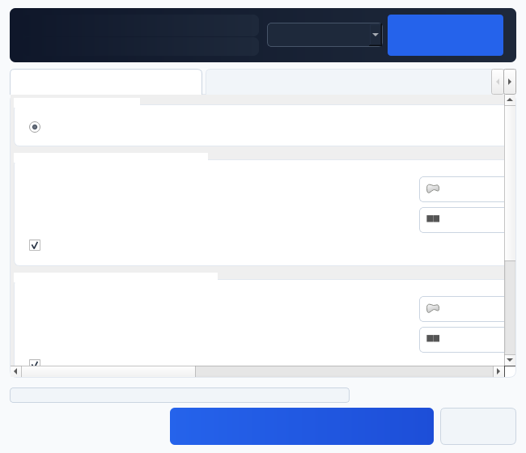

Universal Urban Morphology, Coverage Ratio & Open-Space Void Computation (EPSG:5253)
Building upon Giambattista Nolli's seminal 1748 Rome map (Nuova Pianta di Roma), the Figure-Ground & Solid-Void Analyzer decomposes the urban matrix into private built mass ("solid") and contiguous open space ("void").
bina_taban_m2 and bolge_m2) in a single zone/block layer without requiring geometric spatial joins.Authentic screenshots captured offscreen via headless PyQGIS QT_QPA_PLATFORM=offscreen:

All cited academic papers are strictly validated via Crossref / DOI.org API (Zero Hallucination Rule):
| Verified DOI | Author(s) & Year | Title & Publication Venue |
|---|---|---|
| 10.1068/b32067 | Turner (2007) | From Axial to Road-Centre Lines: A New Representation for Space Syntax — Environment and Planning B |
| 10.1080/01621459.1963.10500845 | Ward (1963) | Hierarchical Grouping to Optimize an Objective Function — Journal of the American Statistical Association |
| 10.1016/j.landurbplan.2014.12.007 | Godwin et al. (2015) | The impact of urban residential development patterns on forest carbon density — Landscape and Urban Planning |